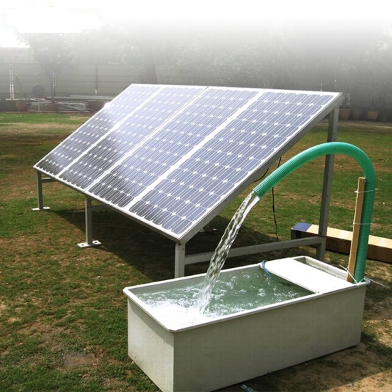
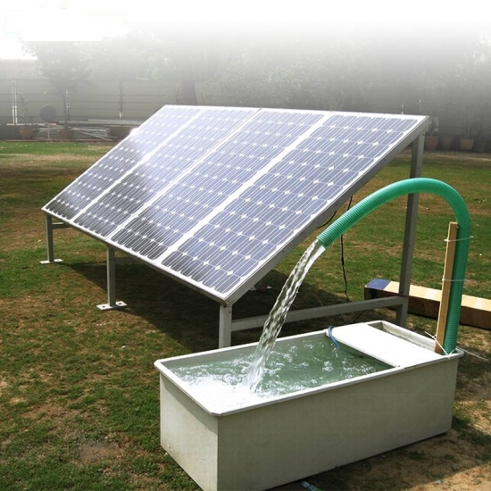
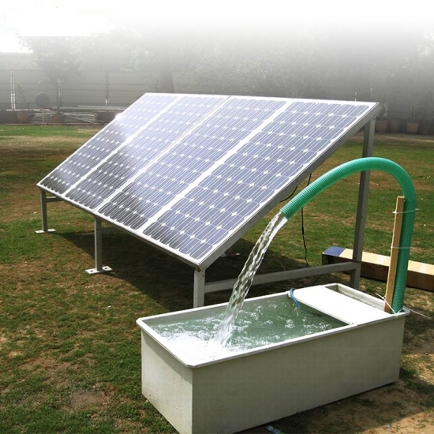

Doğa Dostu Çözümler
 

Güneş enerjisi ile çalışan modern ve sürdürülebilir yaşam alanları oluşturuyoruz.
Solar Güneş Enerjisi Çözümlerinizde Güvenilir Ortağınız
Bolu Solar Enerji, yenilikçi güneş enerjisi çözümleri sunmayı hedefleyen dinamik bir firmadır. 2013 yılında kurulmuş olan Solinved firmasının Bolu bayisi olarak, enerji sektöründeki değişen ihtiyaçlara uyum sağlayarak ve sürdürülebilir enerjiye olan talebi karşılayarak hizmet vermekteyiz. Çevresel ve toplumsal etkileri göz önünde bulundurarak, projelerimizi sürdürülebilirlik ilkelerine bağlılıkla planlıyor ve uyguluyoruz.
Bolu Solar Enerji olarak, müşteri memnuniyetini her zaman öncelikli görüyor ve ihtiyaçlarını en iyi şekilde karşılamak için çalışıyoruz. Yenilikçi yaklaşımımız, tecrübeli kadromuz ve sektördeki bilgi birikimimizle güneş enerjisi alanında öncü bir konum elde etmeyi hedefliyoruz.

Güneş enerjisi ile çalışan modern ve sürdürülebilir yaşam alanları oluşturuyoruz.
Adres: Munduşlar Köyü No 46, Mudurnu / Bolu
Telefon: 0543 220 46 57